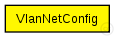

TODO auto-generated module
The following diagram shows usage relationships between types.
Unresolved types are missing from the diagram.
The following diagram shows inheritance relationships for this type. Unresolved types are missing from the diagram. 
| Name | Value | Description |
|---|---|---|
| display | i=block/cogwheel_s |
// // TODO auto-generated module // simple VlanNetConfig { @display("i=block/cogwheel_s"); }
 This documentation is released under the Creative Commons license
This documentation is released under the Creative Commons license